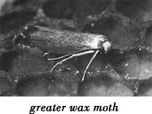

03-2018北京，C
Plastic-Eating Worms

Humans produce more than 300 million tons of plastic every year. Almost half of that winds up in landfills(垃圾填埋场), and up to 12 million tons pollute the oceans. So far there is no effective way to get rid of it, but a new study suggests an answer may lie in the stomachs of some hungry worms.
Researchers in Spain and England recently found that the worms of the greater wax moth can break down polyethylene, which accounts for 40% of plastics. The team left 100 wax worms on a commercial polyethylene shopping bag for 12 hours, and the worms consumed and broke down about 92 milligrams, or almost 3% of it. To confirm that the worms' chewing alone was not responsible for the polyethylene breakdown, the researchers made some worms into paste(糊状物)and applied it to plastic films. 14 hours later the films had lost 13% of their mass—apparently broken down by enzymes(酶)from the worms' stomachs. Their findings were published in Current Biology in 2017.
Federica Bertocchini, co-author of the study, says the worms' ability to break down their everyday food—beeswax—also allows them to break down plastic. “Wax is a complex mixture, but the basic bond in polyethylene, the carbon-carbon bond, is there as well,”she explains. “The wax worm evolved a method or system to break this bond.”
Jennifer DeBruyn, a microbiologist at the University of Tennessee, who was not involved in the study, says it is not surprising that such worms can break down polyethylene. But compared with previous studies, she finds the speed of breaking down in this one exciting. The next step, DeBruyn says, will be to identify the cause of the breakdown. Is it an enzyme produced by the worm itself or by its gut microbes(肠道微生物)?
Bertocchini agrees and hopes her team's findings might one day help employ the enzyme to break down plastics in landfills. But she expects using the chemical in some kind of industrial process—not simply“millions of worms thrown on top of the plastic.”
全部题目与逐题讲解
- A.They take plastics as their everyday food.
- B.They are newly evolved creatures.
- C.They can consume plastics.
- D.They wind up in landfills.
查看答案与讲解
答案：C
1.C 细节理解题。根据文章第二段第一句中的“the worms of the greater wax moth can break down polyethylene, which accounts for 40% of plastics”以及下面的“and the worms consumed and broke down about 92 milligrams, or almost 3% of it”可知,本题选择C项。
- A.identify other means of the breakdown
- B.find out the source of the enzyme
- C.confirm the research findings
- D.increase the breakdown speed
查看答案与讲解
答案：B
2.B 细节理解题。根据文章倒数第二段最后两句“The next step, DeBruyn says, will be to identify the cause of the breakdown. Is it an enzyme produced by the worm itself or by its gut microbes?”可知,本题选择B项。
- A.help to raise worms
- B.help make plastic bags
- C.be used to clean the oceans
- D.be produced in factories in future
查看答案与讲解
答案：D
3.D 推理判断题。根据文章最后一段最后一句“But she expects using the chemical in some kind of industrial process...”可以推断出,将来这种化学物质可能会在工厂被生产,故选择D项。
- A.To explain a study method on worms.
- B.To introduce the diet of a special worm.
- C.To present a way to break down plastics.
- D.To propose new means to keep eco-balance.
查看答案与讲解
答案：C
4.C 主旨要义题。文章第一段最后一句话提出有一种除去塑料垃圾的方法,下文一直围绕这种方法展开说明,故选择C项。
本篇暂无未重复外刊。